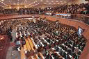

센터소개
참빛선교센터는...
하나님을 믿는자나, 하나님을 믿지 않는자에게
하나님의 말씀을 성경적 교리에 맞춰 강해 함으로써
불신자와 믿음의 성도들에게
하나님의 참 말씀을 널리 전파 하여 삶의 이정표와 영혼구원의 빛으로 그듭나기 위한 목적으로 설립되었습니다.
예절교육원 설립 목적

참빛선교센터 예절교육원은...
목회자나 직분자, 일반성도들이
교회안에서나, 교회밖에서
교인으로써 지켜야 할 예절과 품위를 유지하여,
하나님께 더욱 귀한 쓰임 받을 수 있도록 하기 위하여 교회와 성도를 대상으로 한 예절교육을 실시 할 목적으로 설립되었습니다.
우리는 교회예절과 매너를 통해
하나님을 영화롭게 하고 성도 간의 사랑을 실천하며
건강한 교회 공동체 문화를 만들어갑니다.
핵심 가치
하나님 영광
모든 예절과 매너는 하나님을 영화롭게 하는 것을 목표로 합니다.
상호 존중
성도 간의 배려와 존중을 통해 사랑을 실천합니다.
실천적 교육
이론과 실습을 겸비한 체계적인 교육 프로그램을 제공합니다.
교회 문화 개선
건강하고 아름다운 교회 공동체 문화를 만들어갑니다.